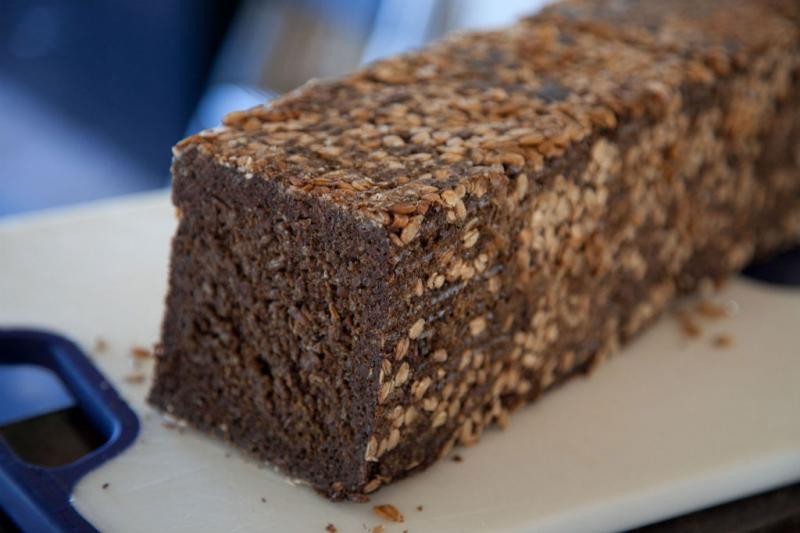

|  | |
| 350g | rye meal |
| 350ml | water |
| 50g | sourdough culture |
| ◇ | |
| 200g | rye berries |
| 800ml | water |
| ◇ | |
| 350g | cracked rye |
| 350ml | water |
| ◇ | |
| 350g | rye meal |
| 100ml | water |
| 25g | salt |
| 120g | sunflower seeds |
| 100g | molasses |
| ◇ | |
| 3 Tbsp | rolled rye |
| 1 Tbsp | water |
Combine rye meal, water and sourdough culture and let rest at room temperature for 16 to 18 hours.
Combine rye berries with 200ml boiling water and let rest over night. The next day, add another 600ml of water, bring to a boil, and simmer at low heat for about one our. Discard excess water.
Combine cracked rye with water and let stand over night.
Combine all ingredients, except for the rolled rye and mix thoroughly. Then let rest for about 30 minutes.
Sprinkle 13" Pullman bread pan with rolled rye and transfer dough to pan. Push dough to the side and sprinkle rolled rye on sides or loaf; then firmly pat down dough. Brush top of dough with water and sprinkle remaining rolled rye on top of loaf. Cover and let rest for another two to three hours.
Preheat oven to 300°F. Seal bread pan in an oven bag and bake for 14 hours. After the first hour, reduce heat to 250°F.
Let rest inside of covered bread pan for at least 24 hours before serving.
Slice thinly. Can be frozen for up to six months.